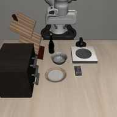
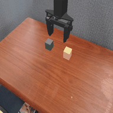
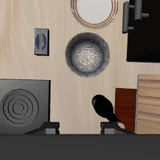
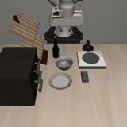
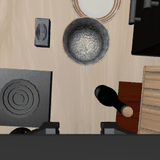

1. Обзор данных предыдущих спринтов (D1–D4)
Object lexicon — категории
| category_en | count |
|---|---|
| bottle | 4 |
| brick pack | 3 |
| can | 2 |
| cube | 2 |
| vegetable | 2 |
| plate | 2 |
| carton | 2 |
| bowl | 1 |
| basket | 1 |
| cutlery | 1 |
| box | 1 |
| appliance | 1 |
| dish | 1 |
| sink | 1 |
| towel | 1 |
| rack | 1 |
| cabinet | 1 |
Пример записи object_lexicon.csv (D2)
| raw_name | akita_black_bowl |
| canonical_name_en / ru | black bowl / черная миска |
| visual_attributes_en | black round bowl |
| allowed_synonyms_ru | пиала |
Пример записи task_inventory.jsonl (D1) и её вариантов в prompts_v0.jsonl (D4)
Сцена libero_spatial__pick_up_the_black_bowl_from_table_center_and_place_it_on_the_plate__init001 — все 7 primary-вариантов инструкции для одной и той же сцены (одна задача, один init state, разные языковые оси):
| variant | instruction |
|---|---|
| en_canonical | «pick up the black bowl from table center and place it on the plate» |
| en_paraphrase | «grab the black bowl at the center of the table and set it on the plate» |
| mt_russian | «возьмите чёрную миску со средины стола и поставьте её на тарелку» |
| ru_literal | «подними черную миску по центру стола и поставь ее на тарелку» |
| ru_case_swap | «поставь тарелку на черную миску по центру стола» |
| ru_negation | «подними не ту миску, что рядом с формочкой, а ту, что по центру стола, и поставь на тарелку» |
| code_switch | «подними black bowl по центру стола и поставь на plate» |
2. Обзор сетапа роллаутов
| Модель | Backbone | Среда(ы) и чекпойнт(ы) | Промптов |
|---|---|---|---|
| GreenVLA-R0 | Qwen3-VL-4B-Instruct | SimplerEnv: SberRoboticsCenter/GreenVLA-5b-base-stride-1 | 28 |
| GreenVLA-R1 (bridge) | Qwen3-VL-4B-Instruct | SimplerEnv: SberRoboticsCenter/GreenVLA-5b-stride-1-R1-bridge | 28 |
| GreenVLA-R2 (bridge, RL-aligned) | Qwen3-VL-4B-Instruct | SimplerEnv: SberRoboticsCenter/GreenVLA-5b-stride-1-R2-bridge | 28 |
| OpenVLA-OFT | Prismatic (openvla-7b) | LIBERO: moojink/openvla-7b-oft-finetuned-libero-spatial-object-goal-10 | 99 |
| pi0 | PaliGemma | LIBERO: lerobot/pi0_libero_finetunedSimplerEnv: lerobot/pi0_base (zero-shot) | 127 |
| pi0.5 | PaliGemma | LIBERO: lerobot/pi05_libero_finetunedSimplerEnv: lerobot/pi05_base (zero-shot) | 127 |
| SmolVLA | HuggingFaceTB/SmolVLM2-500M-Video-Instruct | LIBERO: HuggingFaceVLA/smolvla_liberoSimplerEnv: lerobot/smolvla_base (zero-shot) | 127 |
Полная архитектура (env-worker/model-server split, авторазметка, известные допущения) — в
.claude/skills/slava-model-rollouts/SKILL.md.
Фактическое покрытие прогонов (эпизодов сделано / запланировано)
python scripts/generate_rollout_report.py) против более полного
rollout_annotations.jsonl в будущем без изменений кода.| Модель | Эпизодов | Статус |
|---|---|---|
| GreenVLA-R0 | 0 / 28 | not started |
| GreenVLA-R1 (bridge) | 0 / 28 | not started |
| GreenVLA-R2 (bridge, RL-aligned) | 14 / 28 | partial |
| OpenVLA-OFT | 99 / 99 | complete |
| pi0 | 127 / 127 | complete |
| pi0.5 | 127 / 127 | complete |
| SmolVLA | 47 / 127 | partial |
3. Камерные записи роллаутов
По одному эпизоду на модель (где данные уже есть), кадры agentview/wrist на старте, середине и конце эпизода. Полный просмотр — notebooks/02_rollout_camera_dashboard.ipynb.
«open the middle drawer of the cabinet»
agentview

wrist

«open the middle drawer of the cabinet»
agentview

wrist
«open the middle drawer of the cabinet»
agentview
wrist
«open the middle drawer of the cabinet»
agentview
wrist
«pick up the green block and place it on the yellow block»
agentview

«open the middle drawer of the cabinet»
agentview
wrist

«pull open the cabinet's middle drawer»
agentview

wrist

«откройте средний ящик шкафа»
agentview

wrist

«открой средний ящик шкафа»
agentview
wrist
«открой не верхний, а средний ящик шкафа»
agentview
wrist
«открой middle drawer шкафа»
agentview
wrist
«pull open the cabinet's middle drawer»
agentview
wrist
4. Метрики — Table: behavioral pilot
Формат и метрики строго по task.md "Table - behavioral pilot" — агрегировано по всем моделям, производившим соответствующий вариант.
| Variant | n | SR | First-contact target acc | Wrong-object rate | Relation success | Forbidden touch |
|---|---|---|---|---|---|---|
| en_canonical | 66 | 25.8% | 33.3% | 9.1% | 25.8% | 3.0% |
| en_paraphrase | 66 | 25.8% | 31.8% | 9.1% | 25.8% | 4.5% |
| mt_russian | 66 | 13.6% | 18.2% | 9.1% | 13.6% | 3.0% |
| ru_literal | 66 | 13.6% | 15.2% | 10.6% | 13.6% | 6.1% |
| ru_free_order | 0 | — | — | — | — | — |
| ru_case_swap | 22 | 18.2% | 18.2% | 13.6% | 18.2% | 9.1% |
| ru_negation | 62 | 12.9% | 12.9% | 11.3% | 12.9% | 3.2% |
| code_switch | 66 | 21.2% | 25.8% | 19.7% | 21.2% | 15.2% |
Разбивка по моделям
GreenVLA-R2 (bridge, RL-aligned)
| Variant | n | SR | First-contact target acc | Wrong-object rate | Relation success | Forbidden touch |
|---|---|---|---|---|---|---|
| en_canonical | 2 | 0.0% | 100.0% | 0.0% | 0.0% | 50.0% |
| en_paraphrase | 2 | 100.0% | 100.0% | 0.0% | 100.0% | 0.0% |
| mt_russian | 2 | 0.0% | 50.0% | 50.0% | 0.0% | 100.0% |
| ru_literal | 2 | 0.0% | 50.0% | 50.0% | 0.0% | 100.0% |
| ru_case_swap | 2 | 0.0% | 0.0% | 100.0% | 0.0% | 100.0% |
| ru_negation | 2 | 0.0% | 0.0% | 100.0% | 0.0% | 100.0% |
| code_switch | 2 | 0.0% | 100.0% | 0.0% | 0.0% | 100.0% |
OpenVLA-OFT
| Variant | n | SR | First-contact target acc | Wrong-object rate | Relation success | Forbidden touch |
|---|---|---|---|---|---|---|
| en_canonical | 16 | 93.8% | 81.2% | 0.0% | 93.8% | 0.0% |
| en_paraphrase | 16 | 93.8% | 75.0% | 0.0% | 93.8% | 0.0% |
| mt_russian | 16 | 56.2% | 50.0% | 0.0% | 56.2% | 0.0% |
| ru_literal | 16 | 56.2% | 50.0% | 12.5% | 56.2% | 0.0% |
| ru_case_swap | 4 | 100.0% | 100.0% | 0.0% | 100.0% | 0.0% |
| ru_negation | 15 | 53.3% | 53.3% | 0.0% | 53.3% | 0.0% |
| code_switch | 16 | 87.5% | 68.8% | 6.2% | 87.5% | 6.2% |
SmolVLA
| Variant | n | SR | First-contact target acc | Wrong-object rate | Relation success | Forbidden touch |
|---|---|---|---|---|---|---|
| en_canonical | 8 | 0.0% | 12.5% | 12.5% | 0.0% | 0.0% |
| en_paraphrase | 8 | 0.0% | 25.0% | 12.5% | 0.0% | 0.0% |
| mt_russian | 8 | 0.0% | 25.0% | 37.5% | 0.0% | 0.0% |
| ru_literal | 8 | 0.0% | 12.5% | 25.0% | 0.0% | 0.0% |
| ru_negation | 7 | 0.0% | 0.0% | 28.6% | 0.0% | 0.0% |
| code_switch | 8 | 0.0% | 25.0% | 37.5% | 0.0% | 0.0% |
pi0
| Variant | n | SR | First-contact target acc | Wrong-object rate | Relation success | Forbidden touch |
|---|---|---|---|---|---|---|
| en_canonical | 20 | 10.0% | 10.0% | 10.0% | 10.0% | 0.0% |
| en_paraphrase | 20 | 0.0% | 5.0% | 10.0% | 0.0% | 0.0% |
| mt_russian | 20 | 0.0% | 0.0% | 5.0% | 0.0% | 0.0% |
| ru_literal | 20 | 0.0% | 0.0% | 0.0% | 0.0% | 0.0% |
| ru_case_swap | 8 | 0.0% | 0.0% | 0.0% | 0.0% | 0.0% |
| ru_negation | 19 | 0.0% | 0.0% | 5.3% | 0.0% | 0.0% |
| code_switch | 20 | 0.0% | 0.0% | 5.0% | 0.0% | 0.0% |
pi0.5
| Variant | n | SR | First-contact target acc | Wrong-object rate | Relation success | Forbidden touch |
|---|---|---|---|---|---|---|
| en_canonical | 20 | 0.0% | 20.0% | 15.0% | 0.0% | 5.0% |
| en_paraphrase | 20 | 0.0% | 20.0% | 15.0% | 0.0% | 15.0% |
| mt_russian | 20 | 0.0% | 5.0% | 5.0% | 0.0% | 0.0% |
| ru_literal | 20 | 0.0% | 0.0% | 10.0% | 0.0% | 10.0% |
| ru_case_swap | 8 | 0.0% | 0.0% | 12.5% | 0.0% | 0.0% |
| ru_negation | 19 | 0.0% | 0.0% | 10.5% | 0.0% | 0.0% |
| code_switch | 20 | 0.0% | 10.0% | 40.0% | 0.0% | 35.0% |
5. Метрики — Table: cleaned language effect (Δlang)
Главная метрика пилота (task.md): отделяет языковой эффект от instruction-string OOD. Положительный Δlang значит, что соответствующая RU/code-switch ось теряет SR сильнее, чем можно было бы объяснить простым перефразированием на английском (en_paraphrase) — то есть эффект специфичен для языка, не просто "непривычная формулировка".
| Effect | Formula | Value |
|---|---|---|
| gap_en_paraphrase | SR_en_canonical − SR_en_paraphrase | 0.0 pp |
| gap_ru_literal | SR_en_canonical − SR_ru_literal | +12.1 pp |
| Δlang_ru_literal | gap_ru_literal − gap_en_paraphrase | +12.1 pp |
| Δlang_ru_free_order | gap_ru_free_order − gap_en_paraphrase | — |
| Δlang_ru_negation | gap_ru_negation − gap_en_paraphrase | +12.9 pp |
| Δlang_code_switch | gap_code_switch − gap_en_paraphrase | +4.5 pp |
Δlang по моделям
Пуллинг по вариантам в таблице выше смешивает разные подмножества моделей/сцен (см. оговорку в разделе 4) — разбивка по модели ниже честнее для интерпретации.
GreenVLA-R2 (bridge, RL-aligned)
| Effect | Value |
|---|---|
| gap_en_paraphrase | -100.0 pp |
| gap_ru_literal | 0.0 pp |
| Δlang_ru_literal | +100.0 pp |
| Δlang_ru_free_order | — |
| Δlang_ru_negation | +100.0 pp |
| Δlang_code_switch | +100.0 pp |
OpenVLA-OFT
| Effect | Value |
|---|---|
| gap_en_paraphrase | 0.0 pp |
| gap_ru_literal | +37.5 pp |
| Δlang_ru_literal | +37.5 pp |
| Δlang_ru_free_order | — |
| Δlang_ru_negation | +40.4 pp |
| Δlang_code_switch | +6.2 pp |
SmolVLA
| Effect | Value |
|---|---|
| gap_en_paraphrase | 0.0 pp |
| gap_ru_literal | 0.0 pp |
| Δlang_ru_literal | 0.0 pp |
| Δlang_ru_free_order | — |
| Δlang_ru_negation | 0.0 pp |
| Δlang_code_switch | 0.0 pp |
pi0
| Effect | Value |
|---|---|
| gap_en_paraphrase | +10.0 pp |
| gap_ru_literal | +10.0 pp |
| Δlang_ru_literal | 0.0 pp |
| Δlang_ru_free_order | — |
| Δlang_ru_negation | 0.0 pp |
| Δlang_code_switch | 0.0 pp |
pi0.5
| Effect | Value |
|---|---|
| gap_en_paraphrase | 0.0 pp |
| gap_ru_literal | 0.0 pp |
| Δlang_ru_literal | 0.0 pp |
| Δlang_ru_free_order | — |
| Δlang_ru_negation | 0.0 pp |
| Δlang_code_switch | 0.0 pp |
6. Что осталось по чек-листу task.md
Ручная валидация первых 100 rollouts (task.md, "Auto-labeling для первых прогонов") —
не выполнена. Требуется ручная сверка выборки эпизодов (камера + rollout_annotations.jsonl +
failure_type_auto) против того, что реально произошло.
v0.1 (projection 3D → 2D crosshair) и pointing-зонд GreenVLA — не начаты, вне scope pilot v0.
Полное покрытие всех моделей × 127 промптов — не достигнуто в рамках этой сессии; см. таблицу
покрытия в разделе 2. Прогон можно продолжить отдельным запуском —
load_completed_run_ids() резюмирует по уже готовым run_id без дублирования.
7. Интерпретация относительно research questions task.md
RQ1: "Which linguistic perturbations cause VLA failures beyond generic instruction-string OOD?"
— отвечает Δlang-таблица (раздел 5), особенно разбивка по модели. Положительный и заметно больше нуля
Δlang по RU/code-switch оси = свидетельство языко-специфичного эффекта, а не просто непривычной
формулировки (уже учтённой через gap_en_paraphrase).
Этот пилот не различает H-understanding / H-grounding / H-binding — для этого нужны slot-level probes, visual-grounding oracle и каузальный patching между base и action-tuned чекпойнтами (task.md "Наш core" пп. 2–6), вне scope pilot v0. Отчёт закрывает поведенческий слой (Phase 2 auto-labeling).